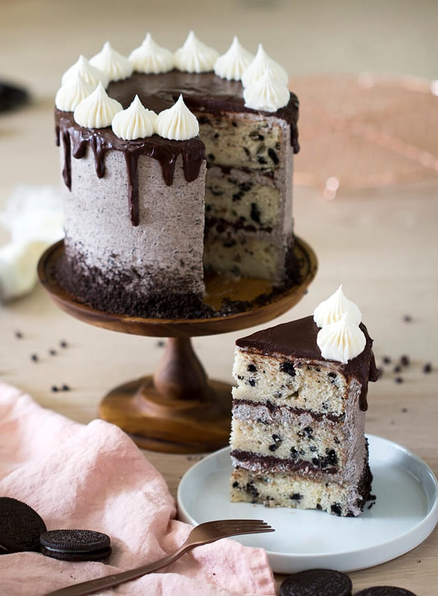
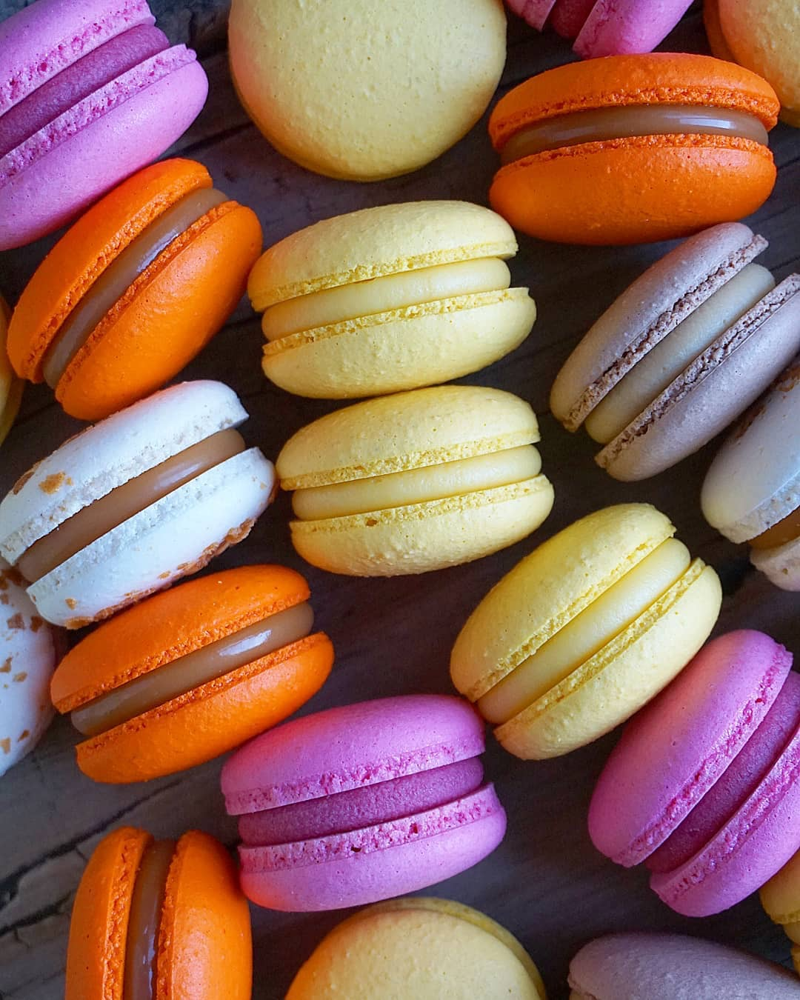
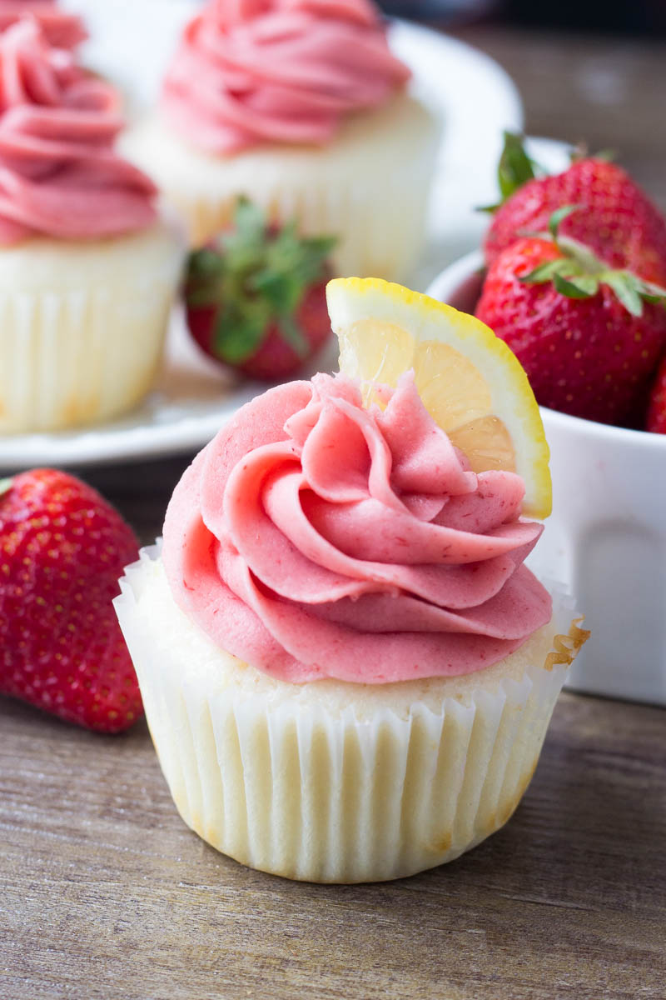
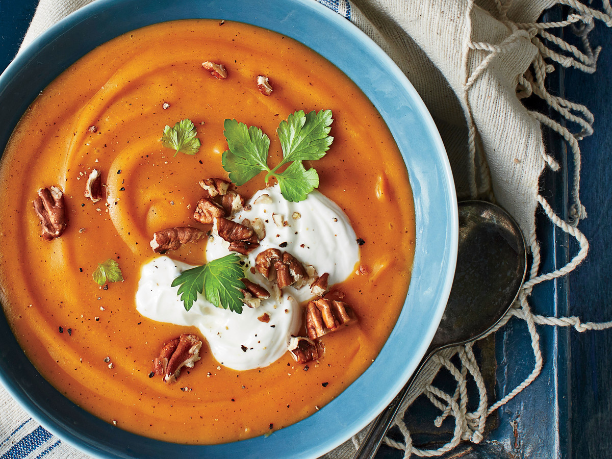
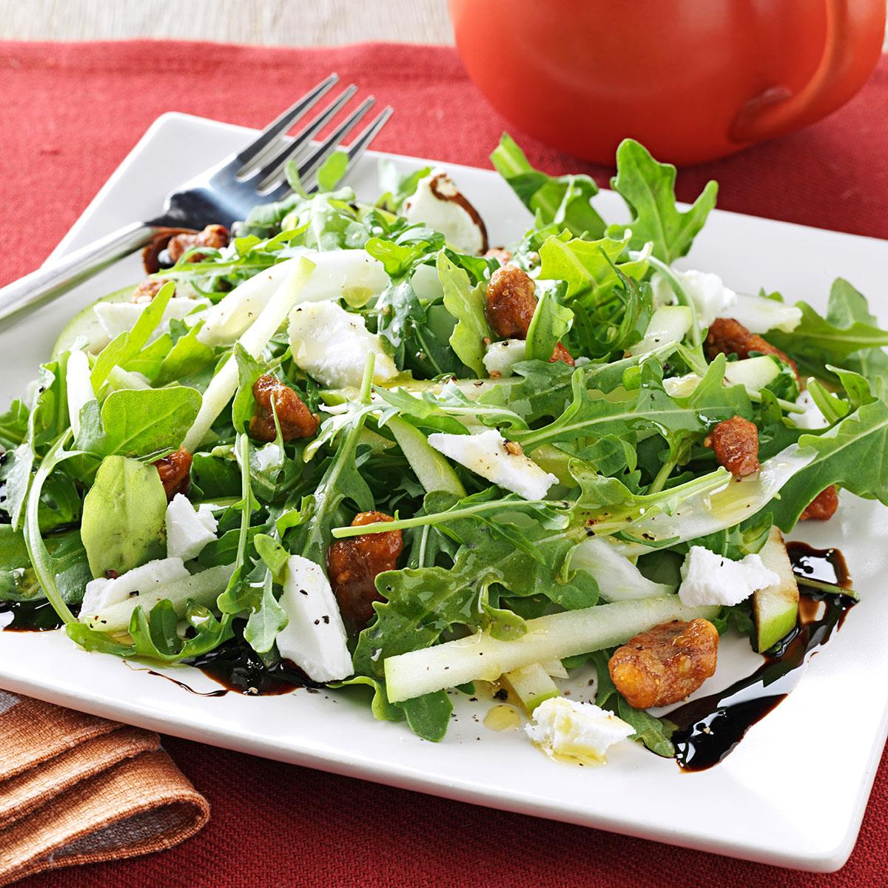
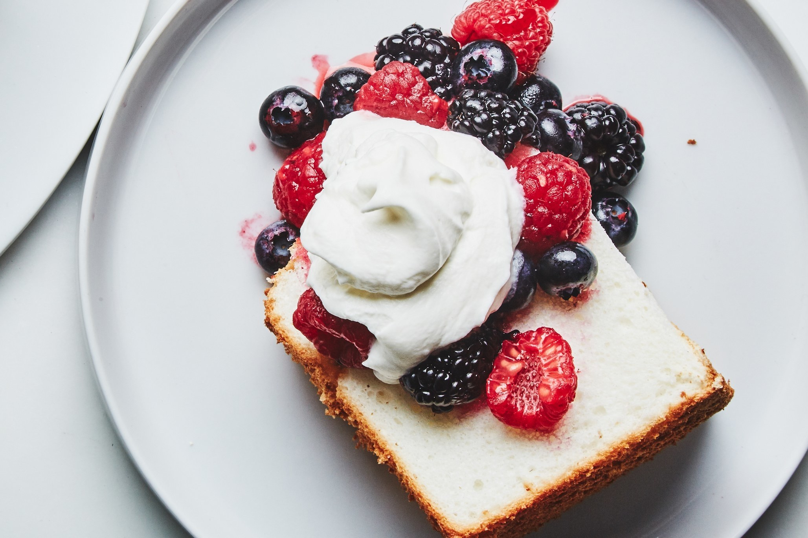

COOKIES AND CREAM!!!!!! I love cookies and I love cake but it never occurred to me
to
put them together until my husband Brian requested an Oreo cake for his birthday,
so I whipped up my moistest vanilla cake, folded in chopped Oreos and a delicious cake was born.
Deniz`s Kitchen
Sweet and Delicious Recipes
Sweet and Delicious Recipes
By Ashley Young October 10, 2019
Oreo Cake
By Melissa Doyle October 11, 2019
Macaron
My obsession with making macarons started a month after I started baking for the
very first time.
Hubby bought me a macaron making class where I learnt how to make French macarons from a French
chef.
It seriously changed my life as I became obsessed with macaron making.
By Cena Aston October 12, 2019
Cupcake
It’s Deniz stopping in from Just So Tasty, and today I’m sharing these Strawberry
Lemonade Cupcakes.
I absolutely love strawberry lemonade because it’s like summertime in a glass and pretty in pink.
And whenever there’s a delicious
flavor combination
 Main
Dishes
Main
DishesSoups
Salads
Desserts